Grado de Pico es un pueblo segoviano que limita con las otras dos provincias, Soria y Guadalajara. Se respira naturaleza y montaña, y libertad. El hotel del pueblo donde me hospede esta bastante bien, dando la sensación de estar como en casa. Como la casa de mi pueblo en el norte de Guadalajara. En general la gente del pueblo muy amable y agradable. Este pueblo forma parte de los llamados pueblos rojos de Segovia, en los que el material utilizado para la construcción predominante es la arenisca ferruginosa. Estos sería el tipo de pueblo que vería por la mañana, existiendo además los pueblos amarillos en los que el material es la cuarcita y los negros que es la pizarra. Los pueblos negros son más típicos de la provincia de Guadalajara en la otra parte de la sierra, con Majalrayo y Valverde de los Arroyos como ejemplos más famosos.
La iglesia de San Pedro estilo románico esta muy bien cuidada, con retablos barrocos. Dio la casualidad que me tope con el cura del pueblo y también con el alcalde y me la enseñaron. Esta iglesia tiene unos capiteles muy laborados labrados en piedra que podrían ser de los mismos artistas que hicieron la del monasterio de santo domingo de silos.
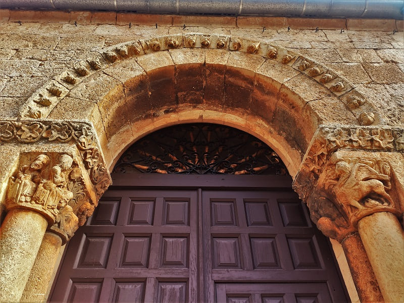
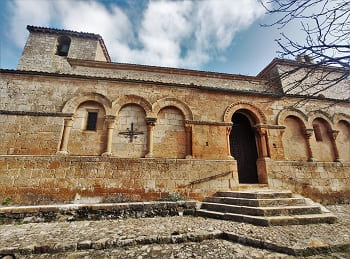
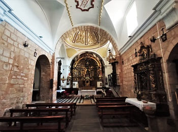
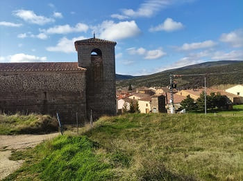
Después de camino a Ayllón, visitaría Santibañez de Ayllón, sus calles y su iglesia.
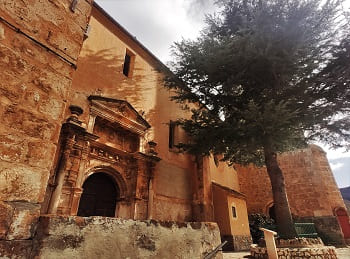
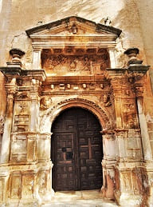
Por último llegaría a Ayllón, uno de los pueblos más importantes de Segovia que vería en el día junto a Sepúlveda y Pedraza. Este pueblo tiene el honor de tener el título de los pueblos más bonitos de España.
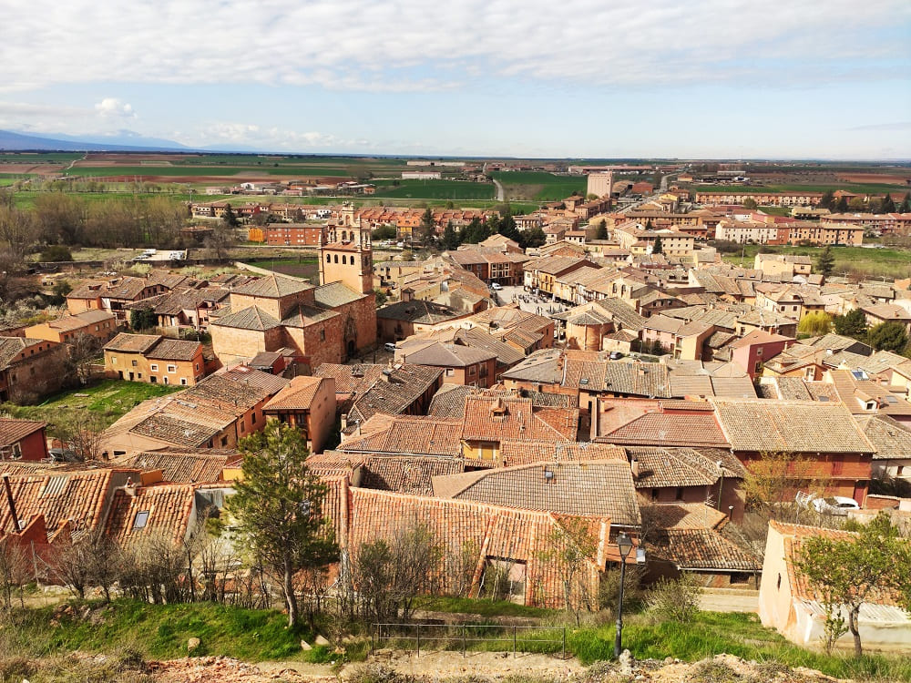
Aparcaría cerca de la iglesia de san Juan que hoy en día es propiedad privada y de ahí subiría a las ruinas del castillo. Desde arriba se tiene la vista panorámica de Ayllón, destacando como edificios la iglesia de Santa María, la plaza Mayor y el convento de la Concepción.
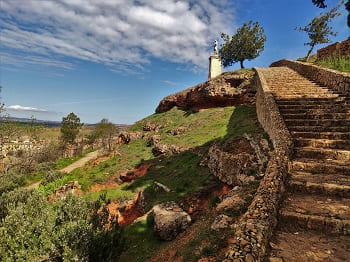
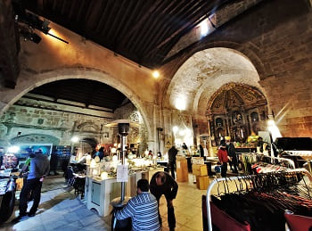
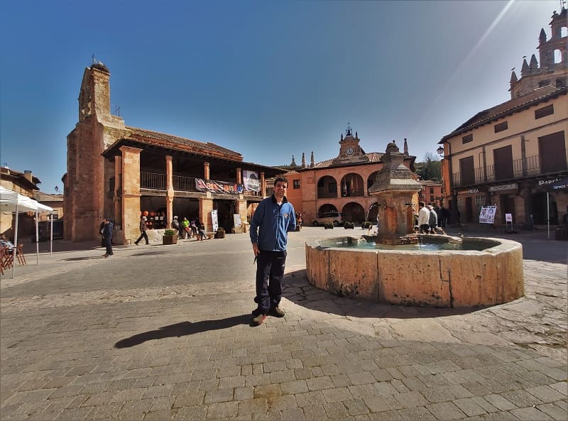
Esta iglesia que es la principal de la villa contiene retablos barrocos de gran valor.
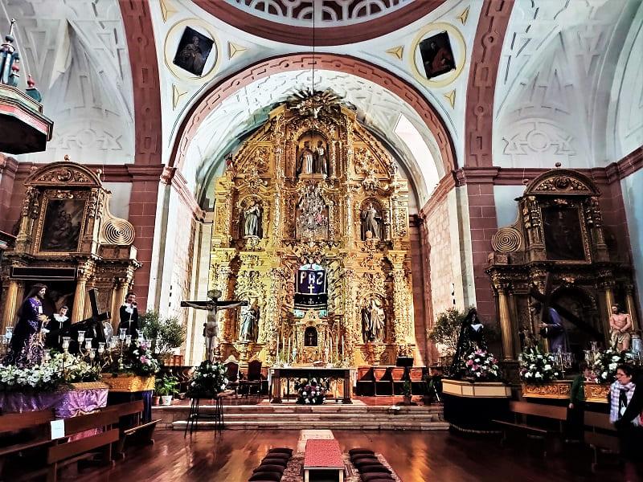
Además de estos tres sitios que más tarde visitaría existen algunos palacios de gran interés, como el palacio de Contreras de estilo flamígero con su cordón en piedra bordeando los escudos nobiliarios o el palacio del Obispo. Merece la pena ver muy cerca de estos palacios el arco de la villa. Arco o puerta defensiva que tenía doble arco y en el cual se podría arrojar cualquier tipo de objeto ante un intento de tomar la ciudad. Además de la iglesia de Santa María la Mayor, esta la iglesia de San Miguel que puede que sea la más antigua del pueblo. Un templo pequeño con una capilla y algunas sepulturas de los nobles de la villa. Hoy en día debido a su emplazamiento, en la plaza Mayor junto al ayuntamiento se organizan distintas exposiciones o mercado donde se venden productos típicos del lugar.
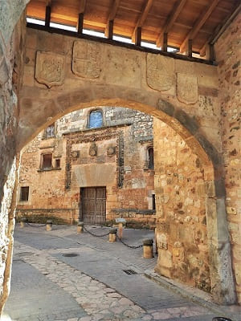

Después de Ayllón y camino a Riaza pararía en Santa María de Riaza para ver su bonita iglesia románica, la iglesia de la Natividad. Esta iglesia cuenta con una gran planta llena de arcos románicos y en su interior un bonito conjunto de 3 retablos, uno barroco y dos más antiguos.
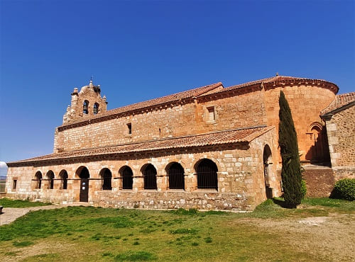
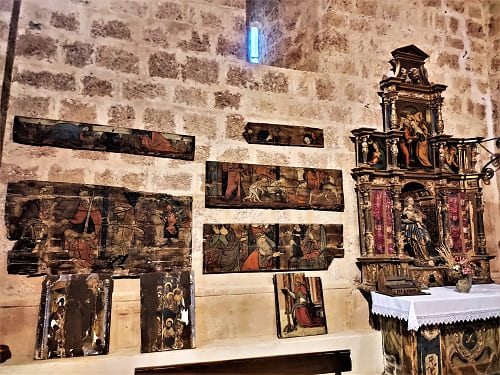
El retablo mayor esta adornado con una serie de 18 tablas renacentistas y rematan los 12 apóstoles por encima que pueden proceder de otros edificios religiosos. El artesonado es de hace cinco siglos, de estilo mudéjar, si bien al realizar tareas de restauración se han encontrado trozos del artesonado original románico. Esas maderas están expuestas en el muro y da una idea de la importancia que pudo tener la iglesia.
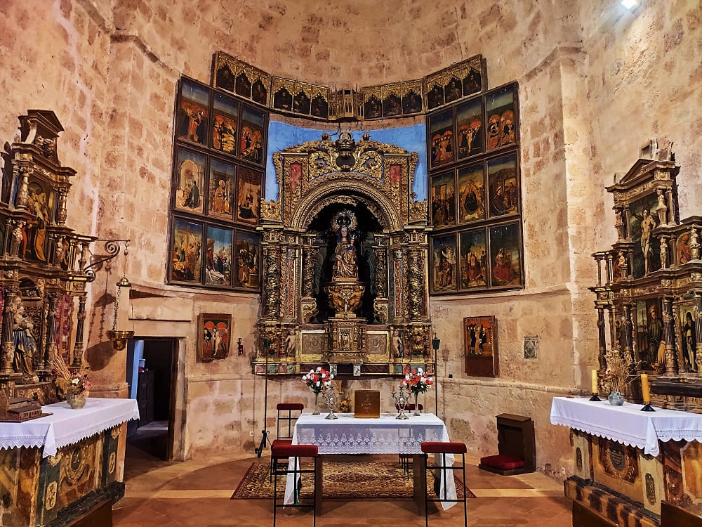
Ya más tarde llegaría a Riaza, que pese a que goza de buena fama no me pareció muy monumental. Cuenta con una plaza mayor circular en la que se encuentra el ayuntamiento y muchos restaurantes y casas antiguas de la época y una iglesia románica hoy en día restaurada al completo por dentro.
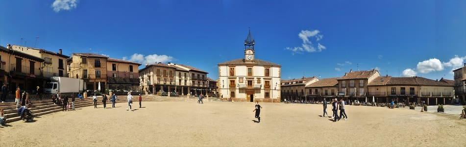
Esta iglesia, la de Nuestra Señora del Manto cuenta con una capilla antigua pero es bastante sobria.
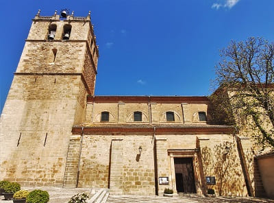
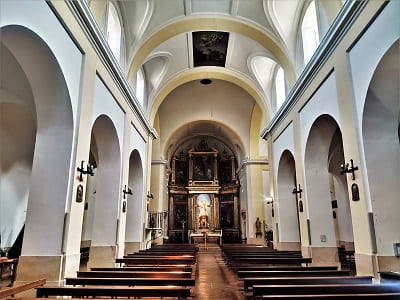
Tras ver Riaza pondría rumbo a Sepúlveda, que diría yo que es el pueblo más monumental de Segovia tras la capital. Lo primero que haría sería aparcar que pese a haber habilitado un espacio muy grande estaba lleno de coches. De ahí iría andando hasta la muralla y la puerta antigua de la Villa. La muralla se conserva y se notan las diferentes etapas de construcción de la misma por la forma de las rocas y el color.
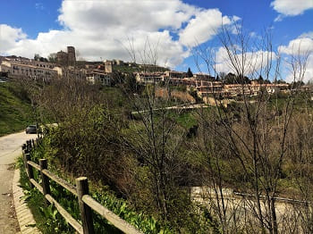
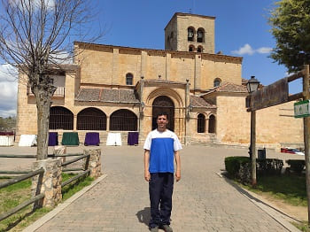
El edificio religioso más importante es la iglesia de nuestra señora de la Peña. Es de estilo románico con un pórtico cargado de representaciones y unos retablos barrocos. En ella esta la talla de la virgen de la Peña que es lo más antiguo del retablo.
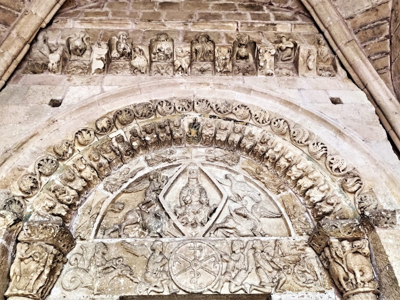
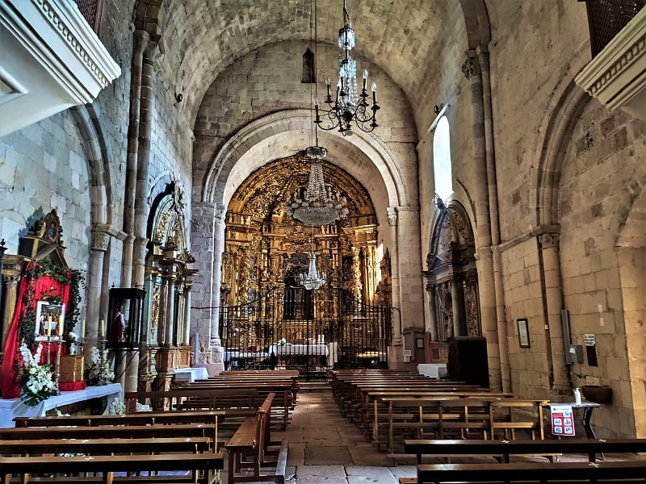
Tirando desde ahí al centro se puede ir viendo diferentes casas nobles como la casa del Moro y otros palacios. La plaza Mayor de la villa impresiona, con sus portales antiguos y sus casas balconadas. Parece ser que el ayuntamiento ya se construyo en las afueras de la ciudad antigua ya que la muralla esta justo detrás del mismo.
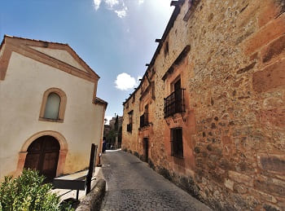
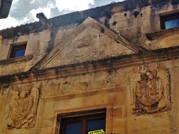
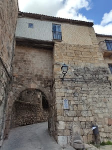
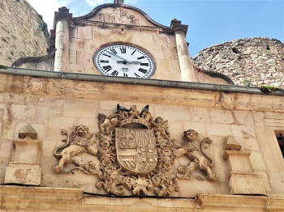
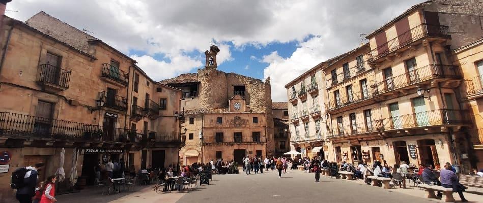
En lo alto del pueblo esta la iglesia de El Salvador, de estilo románico con capiteles decorados. Esta iglesia se ve en las siguientes imágenes. Otras iglesias importantes la iglesia de san Bartolomé y la iglesia de Justo y Pastor.
 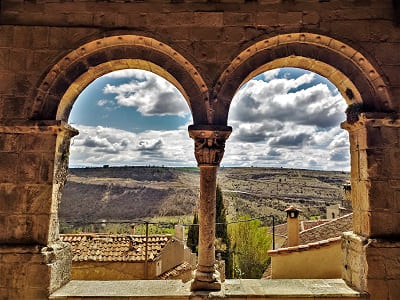
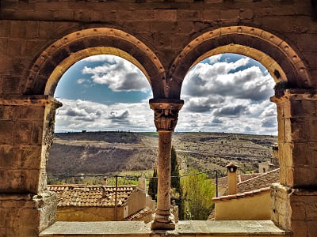
Ya saliendo de la villa pararía en el mirador de Zuloaga donde el pintor segoviano haría alguno de sus cuadros sobre los pueblos de Segovia. Hay se ve la extensión completa y los limites del pueblo.
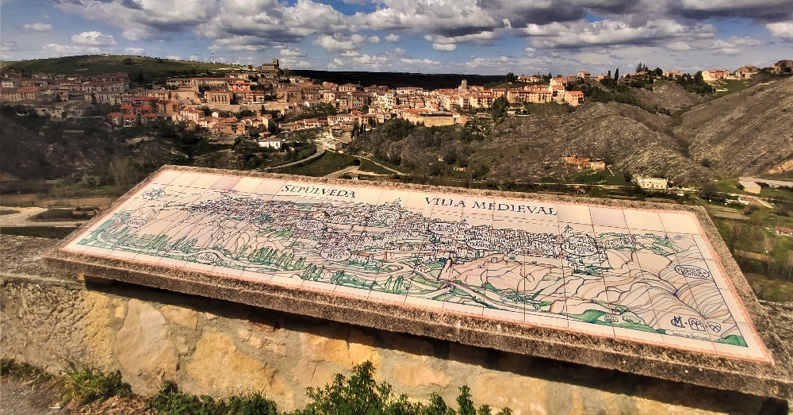
La siguiente parada la haría muy cerca de Sepúlveda si bien tenía que haber parado a la ida. Muy cerca al pueblo de Duratón, pueblo de origen romano en el que se encuentra Confloenta, el yacimiento del pueblo romano más importante de la provincia después de la capital. Justo a 3 km del yacimiento esta la iglesia de Nuestra Señora de la Asunción, una de las iglesias románicas más bonitas de Segovia. Destacan los capitales con detalles vegetales, animales y de la natividad del Señor. Por fuera sustentada sobre una serie de arcos con los capiteles mencionados y decoración en las puertas, arquivoltas.
 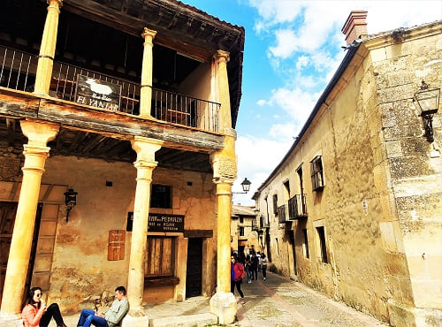
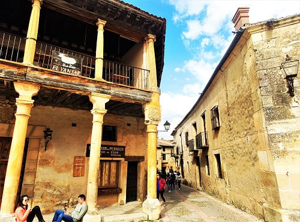

© 2016 - All Rights Reserved - Diseñada por Sergio López Martínez
El sitio se mantiene gracias a la publicidad, por favor Desactiva Adblock para seguir navegando
He desactivado Adblock![[Valid RSS]](https://www.onepointsync.com/wp-content/uploads/2016/08/valid-rss-rogers.png "Validate my RSS feed")